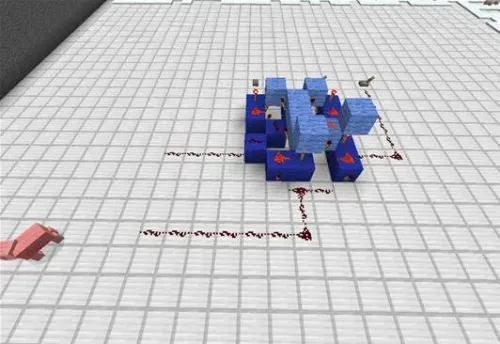
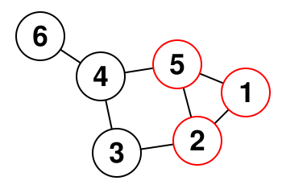
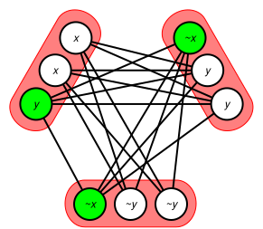
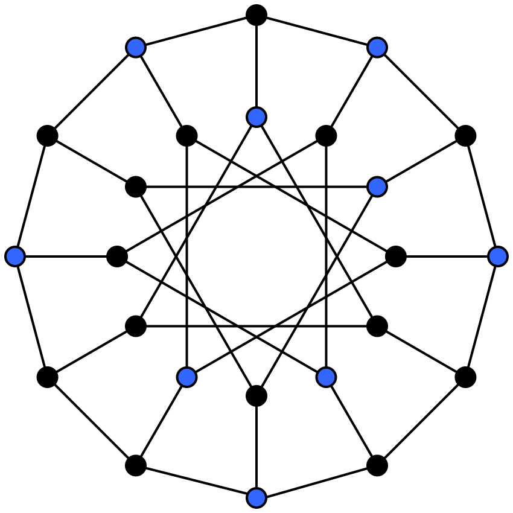

Slides © Grant Williams, CC BY-SA 4.0.
This is an open educational resource. Feel free to submit fixes, improvements, and new material here.
This week we are going to talk about a very abstract topic: complexity categories.
A complexity category is a set of problems (not algorithms) that all share certain time bounds and characteristics.
Up til now, we have considered the bounds of algorithms. We have not yet considered that problems can be bounded too.
But why would we do this?
Bounding problems is useful because it lets us describe the essential difficulty of solving that problem.
For example, general sorting is \(\Omega(n)\). E.g., counting sort is \(\Theta(n)\). You cannot go lower than this and still see every element in the array.
Does that mean that it’s worthless to try to find a \(O(\lg n)\) sorting algorithm?
No, it means it’s worthless to try to find a \(O(\lg n)\) sorting algorithm that makes no assumptions at all (general sorting). There are situations where you might know that only a couple of indices of a skip list are out of place, and where they are.
Bounding problems helps us know when it’s more productive to adjust our assumptions or desires than to try to find an impossible solution.
It turns out, when bounding problems, we often group them into sets.
A very important set is \(P\), which is the set of decision problems for which a deterministic turing machine that solves them in polynomial time is known.
What is a decision problem? Think of it as a problem that asks for a boolean solution.
Example of decision problems: - Is this list sorted? (This one is in \(P\)) - Is this a prime number? (In \(P\) as of 2002) - Is this the shortest path through this graph? (\(\in P\)) - Is this the longest simple path through this cyclic graph? (\(\notin P\)) - Is this matrix the product of these two matrices? (\(\in P\))
Determining whether a list is sorted is \(\Theta(n)\). Multiplying two matrices together is \(\Theta(n^3)\) (technically faster solutions are known, but the fastest is \(\omega(n^2)\)).
Why group these problems together? They seem like one is way faster than the other.
Let’s revisit our basic machine model. We decided early on to use the RAM model of computation, where basically every memory or register access (and therefore, machine instruction in general) counts as 1 time unit.
Consider 3 different machines…
I hope you will agree that these machines are different in their performance characteristics.
It’s not just that one machine is faster than another. Basic operations have fundamentally different time bounds.
For example…
Consider multiplication. For any reasonable multiplication need (not
considering BigInts) for most algorithms, the x64 desktop’s
imul or mulsd instruction suffices.
This instruction is \(\Theta(1)\). It’s contant time.
Again, technically we could say “but what if the number was really big”, but say we only want to multiply numbers that fit in a machine register. It’s \(\Theta(1)\).
But the NES has a processor based on the classic 6502 CPU. This processor does not have a multiply instruction. If you want to multiply two integers, you have to code that with addition.
The naive approach to multiply \(n \times m\) is:
int product = 0;
while (n > 0) {
product += m;
n--;
}This naive approach is \(\Theta(n)\).
A faster approach is to use an algorithm that applies the distributive property to binary numerals. It treats 7 * 7 as 7 * (1 + 2 + 4), adding a power of 2 for every \(1\) in the numeral.
int product = 0;
while (m > 0) {
if (m & 1) product += n;
n <<= 1;
m >>= 1;
}This algorithm is \(\Theta(\lg m)\). Because it takes different amounts of time depending on how many bits are set in \(m\). It’s not constant. We can’t do constant time multiplication on the NES.
Minecraft is a popular video game in which you can explore and build in a world made of blocks.
Some of these blocks, called redstone blocks, have special properties that allow them to turn lights and switches on and off, in response to other lights and switches.
It turns out, the logic behind how this works is turing complete. Meaning that turing machines, and therefore programs, can be simulated inside this game.
However, using these blocks is tricky and slow.
The game looks at adjacent blocks and to slowly propagate the state forward.
As a result, adding even two bits is somewhat slow; adding an entire integer is orders of magnitude slower than doing it in an NES.

The NES can add reasonable-sized integers in \(O(1)\), but multiplication is \(O(\lg n)\).
Minecraft redstone computers cannot even perform addition quickly. Even adding two numbers is \(O(\lg n)\), where \(n\) is the larger number. The time depends on the number of bits in that number.
If we apply the clever multiplication algorithm we saw before, it relies on bit shifts and additions, both of which are \(O(\lg n)\) in minecraft. Since we are performing an addition of \(n\) and some shifts for each 1 in the \(m\) operand, multiplication is \(O((\lg n)^2)\).
If we had used the naive multiplication algorithm, and naive addition by increment, multiplication would be \(O(n^2)\)
Changing from one kind of machine to another radically altered how long it took to do even basic things, let alone more complex operations.
However, one thing remained the same: multiplication takes a polynomial amount of time as a problem.
And we want to consider how long multiplication should take, but as a computer scientist. And a computer scientist should be able to work with many different media of computation: - There are the digital electronic computers we know and love. - There are analog electronic computers, which have been useful in the past and which people theorize may be useful for implementing neural networks. - There are optical computers that use light for calculations - There are chemical computers, where chemical reactions do computation. - There are even biological computers (your brain counts as one). - Really, there are a whole bunch of computing paradigms.
But remember, turing machines are extremely simple. They are just collections of states and transitions guarded by the current state and the state of memory.
And in fact, there are many versions of the Turing machine. Some versions have RAM. Some verisons have variables. Some version have 2 tapes. Some versions have the tape as a circle. These have all been proven equivalent to one another.
So when we’re talking about the difficulty of a problem, we really need to be abstract, because we could be solving that problem in all kinds of wacky media or turing machines with different capabilities.
And yet, we can still say something about it…
A decision problem is in \(P\) if there is a deterministic turing machine (TM) which decides it in \(O(n^k)\) time, for some constant \(k\).
If you have an \(O(n^k)\) algorithm on one reasonable model of TM, there is an equivalent algorithm that will run it in \(O(n^{k + c})\) on another reasonable TM, for some constant \(c\).
A TM model is reasonable if its state-changes and basic operations are simulable on a classical TM in polynomial time, and vice versa (no magic instructions).
It does not matter if you are using a classical Turing machine, a DNA computer, a redstone contraption, or an iPhone. Your polynomial time problem will have a polynomial time algorithm if you have a poly-time algorithm for any (reasonable) turing-equivalent computer.
There are many useful problems in P.
But there are many important problems we want the answer to for which there is no known solution that is in P.
What does that mean? There are three possibilities …
Later, I’ll show you a diagram of these sets. However, the reason I haven’t done that yet, is it actually has to be two diagrams, because…
We don’t actually know that P and NP are different sets. No one has proven it.
NP is definitely a superset of P. That is, if we have a polynomial time solution that runs on a TM, then we definitely have a polynomial time solution that runs on a non-deterministic TM (abbreviated NTM).
An NTM is just a TM that can magically predict what to do next. So if we’re polynomial time without that magic power, giving it to us does not slow us down.
Therefore, all problems in P are also in NP.
However, we don’t actually know whether all problems in NP are in P.
We can’t really say that a problem in NP is not in P. Maybe we just haven’t figured out how to solve it yet in polynomial time.
There might be a polynomial-time reduction from the problem to a problem in P.
Reduction means converting one problem into another, such that solving the other means solving the one.
For example, I can reduce the problem of determining whether a given number is the product of two other numbers to the problem of determining if a matrix is the result of multiplying two other matrices. I just encode the two integers as if they were both \(1\times 1\) matrices, and apply my solution for matrices. Then I convert back.
I’m just re-encoding a simple data type twice, so this reduction takes \(\Theta(1)\).
Conversely, the problem of testing a product of square integer matrices can also be reduced to the problem of multiplying integers. For every \(n\times n\) integer in the second matrix, multiply it by the \(n\) integers in each column of of the first one, and do some additions.
This particular reduction (there are others) takes longer: \(\Theta(n^3)\) multiplications need to happen. But it is still polynomial time.
You notice that our reduction of matrix multiplication to scalar multiplication is pretty much how we usually mutliply (small) matrices.
But sometimes we have a choice of different reductions. Example, my problem is that I want to know if an element is contained in a list? - One reduction involves sorting the list first, typically \(\Theta(n \lg n)\) for comparison sorts, and then solving the problem “is this element in this sorted list”, which can be solved in \(\Theta(\lg n)\). - Another reduction involves building a hash-set from the list \(\Theta(n)\) and then asking the question, “is this value contained in this hashset”, with expected time \(\Theta(1)\).
As programmers, we have flexibility in which reductions we can perform.
There are a huge number of ways to re-imagine a problem. Doing so can give you more insight into both problems, but it can also offer a new solution.
So don’t just think about what you’re doing as solving a problem. Try to think about it as reducing one problem into another that you have a solution for. It’s a kind of alchemy of problem solving.
Before we continue, I feel like I should highlight something.
In this lecture we’re specifically talking about P and NP, which contain decision problems.
Many of the problems we solve as programmers are not decision problems. For example, computing the product of two numbers is a function problem, not a decision problem.
But determining whether a given product actually is the product is a decision problem.
Practically computable function problems live in the sets FP and FNP.
Many of the theorems that apply to P and NP do not apply to FP and FNP. It’s important to keep them straight! Keep me honest too, if I give a problem in the wrong set!
To say that A reduces to problem B in polynomial time, on a deterministic TM, we write: \[A \le_m^p B\]
This is confusing, because if we reduce A to B, it sounds like A must be bigger than B, otherwise how could we reduce it? And yet we use \(\le\).
But really, this notation is about difficulty. If we can reduce A to B in polynomial time, then we know either that A is in the same class as B, or an easier class. For example, a polynomial is less than an exponential as \(n\) goes to infinity.
The \(p\) means “polynomial time”. We don’t care about reductions that are so slow we don’t gain anything by doing them. The \(m\) means many to one (as opposed to many-to-many). It means that you can’t generate lots of reductions and ask an oracle to choose the best one. We will create one instance of B for each instance of A.
For this class, assume that \(A \le B\) is equivalent to writing \(A \le_m^p B\) for problems A and B. We’re going to assume that reductions are polynomial time and deterministic unless I say otherwise.
Suppose that the problem of checking scalar multiplication is called MUL. And suppose that the problem of checking matrix multiplication is called MATMUL.
We saw that MUL \(\le\) MATMUL, and MATMUL \(\le\) MUL, implying that they are “equally” hard (and they are: they are both in P).
They aren’t literally equally hard. Matrices take longer to multiply than scalars. But they are both polynomial time; they are in the same set.
NP is an important category because it contains all the problems that we could theoretically solve in polynomial time if we were smart enough or had enough threads.
There is an interesting problem in NP called SAT.
This is the boolean satisfiability problem. It is the problem of, given some boolean formula like \(a \lor b \land (\lnot b \land c)\), is there some set of booleans that satisfies it? I.e., are there some true/false values we can fill in for \(a\), \(b\), or \(c\) that makes the expression true?
In this case, yes. \(a\) = true, \(b\) = false, \(c\) = true.
This is the only solution, but sometimes there are more than one, and sometimes there are zero. The problem is to determine if at least one solution exists.
In 1971, computer scientist Stephen Cook had an important realization. He realized that every problem in NP could be reduced to SAT.
First, how do we know that SAT is in NP? Let’s imagine you have some complicated boolean formula with \(n\) terms.
Determining if there is a solution is hard. We have to potentially consider every assignment of true or false to every variable, and there can be as many variables as terms.
In principle, this is \(O(2^n)\), because there can be up to \(n\) variables, and there are 2 possibilities per variable.
But, given a solution, determining if it is correct is very easy. We just fill in the trues and falses and evaluate all the operators. This takes linear time in the number of operands.
So on a non-deterministic turing machine, SAT is in NP. It has a polynomial time solution if we have the ability to try every combination at the same time.
Okay, SAT is in NP. But why would we care?
The Cook-Levin theorem, named after Stephen Cook and Leonid Levin, a Soviet (at the time) computer scientist who independently discovered the same things as Stephen Cook, states:
Any problem in NP can be many-to-one reduced to SAT in polyomial time
In other words, \(\forall X \in \mathrm{NP}, X \le \mathrm{SAT}\)
Why? What’s so special about boolean satisfiability?
Imagine we have a SAT solver. SAT solvers are not things that only exist in theory: people compete every year to make the fastest one.
We can give a boolean expression to our SAT solver, and it will tell us whether it has a solution or not. In practice, it will also tell us the solution, but to be strictly a decider, it is only required to output “yes” or “no”.
Cook and Levin’s goal was to convert any decision problem in NP into a SAT problem. For a problem to be in NP, there must exist a Turing Machine (deterministic or not) that solves it in polynomial time.
So we must assume that machine exists, and convert it into a SAT problem somehow.
Given some problem X, our goal is to create a rule that converts each input of the problem into a giant boolean expression (in poly time) that answer three questions: 1. The machine runs correctly (it’s not in two states at once or writing two symbols to one point at memory, etc.) 2. The machine actually halts 3. When the machine does halt, it answers “yes” (i.e., it accepts).
If the boolean expression we generate has a solution, then that means it is possible for the machine to run correctly, to halt, and to answer yes on that input. The problem was originally solved by a non-deterministic TM, so if it is capable of accepting the input, it does accept the input. So if we solved the original problem, this boolean expression will have a solution and vice versa.
To determine whether the machine runs correctly, we literally encode a Turing Machine simulator as a boolean expression.
First, we can describe states of a TM. What do we need to know about a TM to simulate its next steps? - We need to know its current state - We need to know the state of every cell of the tape - We need to know the location of the tape’s head (which cell is “current”)
We can encode these in boolean expressions. For example, we can have a list of variables \(Q_{t,q}\), each of which is true only if the machine can be in state \(q\) at time \(t\), and false otherwise. The number of states is constant, so there are \(C \cdot p(n)\) of these variables in total.
What about the tape? Turing machines have an input alphabet, which is the set of symbols that can be in any cell of the tape.
Define a giant list of boolean variables \(S_{i,t,a}\), each of which means “at time \(t\), index \(i\) on the tape has symbol \(a\)”.
And also, define a list \(H_{i, t}\), each of which means “at time \(t\) the head is over index \(i\)”.
We add a boolean clause \({\large \lor}_{t=0}^{t=p(n)}Q_{t,q_a}\) for every accepting state \(q_a\). So our boolean expression only has a solution if it is possible for the machine to be in an accepting state at some point.
All of these variables together define the set of states the machine could be in. So we can say “hey, if there is some way the machine could accept, then we say”yes” for this input.
What if the machine is in two states at once? Or what if one tape cell has two different symbols in it? These conditions can’t happen with turing machines, but they could happen with the boolean expressions we just introduced.
We need additional conditions that prevent the boolean expression from having a solution when the Turing Machine being simulated does not.
Enforce the following (using lots of “or-but-not” logic) for each \((i, t)\): - Exactly one \(S_{i, t, a}\) is true for all \(a\) in the alphabet. - Exactly one \(Q_{t, q}\) is true for all \(q\) in the set of states. - Exactly one \(H_{i, t}\) is true. (the head is in one state)
But what about transitions?
For every transition in the original machine, \(q \overset {a} \mapsto (q', d)\), where \(q\) is the initial state, \(q'\) is the destination state, \(a\) is the symbol that needs to be under the head, and \(d\) is the direction to move the tape head, we add even more clauses to require:
\[ (Q_{t, q} \land H_{i, t} \land S_{i, t, a}) \implies (Q_{t + 1, q'} \land H_{i+d, t+1} \land S_{i, t+ 1, a'}) \]
That is, for every state and transition, either one of those variables on the left is not set, or all of the variables on the right are set.
So any time we are in the state on the left, it has to be the case that the machine at the next time step is in the correct state, too.
There are some more rule restrictions:
The head must be over exactly one cell at a given time \(t\).
So it must be over at most one cell…: for all \(i, i', i \ne i', \lnot H_{t, i} \lor \lnot H_{t, i'}\)
But also at least one cell: \({\large \lor}_{-p(n) \le i \le p(n)}H_{t,i}\)
Note the bounds on \(i\). We could start going left or right with every transition, and since we take \(p(n)\) steps, that’s as far to the left or right that the head could be.
Similary, we can only be in one state at a time.
The tape can only be changed at the head: \[ \forall a, a', a \ne a', S_{t, i, a} \land S_{t + 1, i, a'} \implies H_{t, i} \]
In other words, if the tape at position \(i\) changes from \(a\) to \(a'\) at time \(t\), then the head needs to be there at time \(t\).
The machine needs to start out in the right state.
\(S_{i, 0, a}\) is true if the initial input has symbol ‘a’ at position ‘i’.
Also, we need to start in the right state: \(Q_{0, q_s}\), where \(q_s\) is the starting state.
Finally, the tape needs to start at position 0: \(H_{0, 0}\)
As a summary from here, we have this giant boolean expression, consisting of all the following anded together: - \(S_{i, 0, a}\) for all \(i\) and \(a\), meaning that we start in a given state - \(Q_{0, q_s}\) we start in state \(q\) at time \(0\) - \(H_{0, 0}\) the head starts at position \(0\) at time \(0\). - for all \(i, a, a', a \ne a'\), \(\lnot S_{t, i, a} \lor S_{t, i, a'}\), at most one symbol per tape cell - \({\large \lor}_{a \in \Sigma}S_{t, i, a}\), at least one symbol per tape cell - \(\forall a, a', a \ne a', S_{t, i, a} \land S_{t + 1, i, a'} \implies H_{t, i}\), tape only written at head
and…
If that giant, massive boolean expression has a solution, then it means that the turing machine we’re simulating has the possibility of reaching an accepting state.
Which means it does reach an accepting state (because NTMs explore every possibility)
Which means we can answer the original problem, but using the solution for SAT instead of the turing machine we had originally.
This is a reduction, and it’s one of the most important ones. It’s a reduction that works for any problem in the entire, massive set of NP.
All of these problems suppose that we’ve performed the reduction from X to SAT.
That’s a ton of work.
Imagine we have a simple problem like “is this list sorted”, and we convert it into that boolean monstrosity so we can run it on a SAT solver. Is this transformation really polynomial time?
Yes. Building the table takes, at worst, \(O((p(n))^3)\), because: - There can’t be more than \(p(n)\) time units, so \(t\) is bounded. - Even if there were more than \(p(n)\) alphabet symbols, we wouldn’t have time to write them all in \(p(n)\), so take a subset of size \(p(n)\). - We can only write to, at most, \(p(n)\) tape cells.
Therefore, creating that giant table of tape states \(S_{t, i, a}\) is cubic in \(p(n)\). It might require us to write up to \(p(n) \times p(n) \times p(n)\) variables.
And if \(p(n)\) is a polynomial, \((p(n))^3\) is a polynomial. This is the most expensive step, and it dominates the others.
However, it’s a little slower even, because we need to run this on a Turing Machine. We often use the bit model for runtime bounds on classical Turing Machines, and storing the time \(t\) and index \(i\) is usually done in binary. This requires a logarithmic number of bits.
So the final runtime on a turing machine is bounded by \(O(\lg (p(n)) (p(n))^3)\)
But maybe you’re curious how long SAT takes?
Modern SAT solvers have all kinds of clever heuristics and multi-threading capabilities. Many package managers, like Conda and Apt, (but not Pacman sorry Arch users), are basically just wrappers around a SAT solver.
Most of the time, it’s possible to make these solvers run quickly. But, fundamentally, there are still \(2^n\) combinations of variables to consider (with each representing whether a particular package and version is included). That’s why sometimes Pip can take 15 minutes and then crash: it got stuck in a bad SAT solve.
For this reason, some dependency managers just say “we will only use the latest version”. And you get Arch + pacman.
In the worst case, SAT takes \(\Theta(2^n)\)
“Would anyone really do this?” No. If you have an algorithm that tells you whether a list is sorted, and you want to actually use it, to, you know, see if a list is sorted, you would never encode it as a SAT problem and run a SAT solver.
It goes from being \(\Theta(n)\) to \(O(2^n)\), where \(n\) is a way bigger number. Awful. Horrible.
So what was the point?
By showing that every problem could be reduced to SAT in polynomial time, Cook and Levin did something very interesting.
Imagine that we go the other way around, and reduce SAT to something else in polynomial time?
Now we have proven that SAT and the other problem are “equally-ish” hard.
So what if we somehow proved that SAT could be reduced (in polynomial time) to the problem of checking if two matrices multiplied gave a particular product? …
…Then we would have a poly time solution on a deterministic turing machine for SAT.
That is, we would have proved that SAT is actually in P.
And you know what? Everything in NP can be reduced to SAT…
Which means that everything in NP can be reduced to the problem of checking a matrix product (by way of SAT)…
Which means that everything in NP has a polynomial time algorithm that runs on a deterministic turing machine…
Which means that everything in NP is actually in P!
In fact, SAT has been reduced to many, many other problems. But none of them is in P.
The set of problems that is equally as hard as SAT is called “NP-complete”. It is the set of the hardest problems in NP.
We already know that P \(\subseteq\) NP
If you could reduce SAT, or any NP-complete problem, to something in P, you would prove that NP \(\subseteq\) P.
And this would prove that P = NP.
And you would win a million dollars.
You would also win a million dollars if you proved that P \(\ne\) NP, which seems much harder (you’d have to show that there is no possible reduction from any np-complete problem to any problem in P in poly time)
According to polls, most (about 80%) of computer science researchers believe P \(\ne\) NP.
It makes sense. It’s hard to imagine how you could convert SAT into something that runs in polynomial time.
However, there’s a weird possibility. Donald Knuth (question 17) believes actually that P = NP. He feels that there is space for polynomial algorithms with enormous exponents that do rote operations on all the bits of a problem. However, he feels that the proof will likely be non-constructive. Meaning, it will be an indirect proof, and it won’t come with an algorithm that tells you how to convert an NP problem to a P problem.
So you would know your RSA encryption isn’t quite as secure as you thought, but wouldn’t know for sure if the algorithm that breaks it is practical. Great.
(Image by Behnam Esfahbod, CC-BY-SA 3.0, 2007-11-01)
(NP-hard is just everything at least as hard as NP-complete)
One last thing: why so much about bounding time and not bounding space?
Because so far, we’ve focused on polynomial time algorithms in this course. And an algorithm that uses polynomial time also uses polynomial space.
If writing to ram takes 1 operation, and you perform \(p(n)\) operations total, then you can write to at most \(p(n)\) cells of ram.
This is generally why we focus more on time bounds than space bounds.
However, in the latter half of this course, we’ll see some examples of NP-complete problems that can be sped up a lot by using a bunch of space. So it does still matter.
A program can’t use more space than time. However, it can use much more time than space.
PSpace is the set of problems that take a polynomial amount of time. It actually includes some problems that are harder than the hardest problems in NP.
These are some practice problems based on popular games. If you don’t know the rules for one of these games, try to come up with a question about a game you are familiar with, and encode it as a SAT problem.
Last class we learned a ton: - The importance of complexity categories: different computers have different capabilities, but polytime is polytime. - The complexity categories P, NP, and NP-complete - Why SAT is so important - How to reduce an NP problem to SAT
But there’s one thing missing…
Remember how we said that any problem in NP can be reduced to SAT, but what about reducing SAT to other problems?
There is an entire class of problems in NP that SAT has been reduced to. These are called the NP-complete problems.
Many of these reductions are creative, and it helps to understand them. Let’s take a look!
SAT feels like a very open-ended problem. Given any legal expression composed of boolean variables and boolean operators, determine whether it has a solution.
It turns out, this problem is actually equivalent to a problem that seems much simpler: 3SAT
The problem statement is like this: Given a boolean expression in 3CNF, does it have a solution?
But what is 3CNF?
3-CNF stands for “three term conjunctive normal form”.
Conjunctive normal form means that all of the conjunctions (ands) appear at only the highest level. That is, they happen last when evaluating.
\(A \land (\lnot B \lor C) \land (D \lor F \lor G \lor H)\) is in conjunctive normal form \(A \land (\lnot B \lor (C \land D)) \land (F \lor G \lor H)\) is not, because of the \(C \land D\) hapenning early.
3-CNF is when we follow the rules for CNF, but also each term is the disjunction (or) of 3 terms, like this: \((A \lor B \lor C) \land (D \lor \lnot E \lor F) \land (G \lor H \lor I) \land \cdots\)
Every boolean expression can be converted to CNF. The main trick is to replace every operator (such as xor or nand) with its equivalents using only and, or, and not. And then, to apply DeMorgan’s laws. And it turns out, any CNF expression can be 3CNF.
It might surprise you that the general problem of SAT can be reduced to the seemingly simpler problem of 3SAT. But it can: we just have to add more terms.
Given an arbitrary boolean expression composed of and, or, and not, we can convert it into a 3SAT expression by following some rules. We do it clause by clause
First, the SAT clause might already be in 3SAT: \(A \lor B \lor C\). In this case, we’re done.
What if it only has 1 term? Then \(A \equiv A \lor A \lor A\) And 2 terms? \(A \lor B \equiv A \lor B \lor B\)
Okay, so for 3 or fewer terms, it’s easy to turn a SAT clause into 3SAT clause. But what do we do for 4 or more terms?
We’re assuming that we’re already in CNF, so each clause (the ones being anded) looks like this: \(C_i = (\ell_0 \lor \ell_1 \lor \ell_2 \lor \ell_3 \lor \cdots \lor \ell_k)\)
We can convert this to a number of 3CNF clauses by adding more variables like this: \(C_i = (\ell_0 \lor \ell_1 \lor y_0) \land (\lnot y_0 \lor \ell_2 \lor y_1) \land (\lnot y_1 \lor \ell_3 \lor y_2) \land \cdots \land(\lnot y_{k - 3} \lor \ell_{k - 1}\lor \ell_k)\)
These \(y\) variables are just added to the formula, but they don’t change whether or not there is a solution. Think of \(y_0\) as meaning “there’s a true clause later”. For example, if \(y_0\) is true, then \((\lnot y_0 \lor \ell_2 \lor y_1)\) means that \(\ell_2\) is true or there’s a true value later (\(y_1\)).
Another way of seeing \((\lnot y_0 \lor \ell_2 \lor y_1)\), is that it’s saying “or maybe there isn’t a true value later, and actually it’s \(\ell_2\) that is the true one. But if not, then there’s a separate true variable in a future clause (\(y_1)\)
If there isn’t a true clause later and if \(\ell_0\) and \(\ell_1\) are both false, then the whole original clause would have been false. Likewise, if there is a clause later that is true, only one of the original clause variables could satisfy it, because the
If this is confusing consider this: the original clause was a giant “or” of lots of variables.
A single one of them being true makes the whole clause true.
Therefore, if, say \(\ell_1\) is true, we can now set all the \(y\) variables to false, and the whole thing will be true.
If \(\ell_0\) and \(\ell_1\) are false, then we need one of the other ones to be true. So \(y_0=\mathrm{true}\) forces \(l_2\) to be true (because its clause has \(\lnot y_0\)), or else, it forces \(l_3\) to be true (because of \(\lnot y_1\)), etc.
A solution to the 3SAT clause implies a solution to the original clause, and that is true for all the clauses in the expression.
How fast is this reduction?
It should be reasonable that it is a polynomial time reduction. We iterate over every clause in the original expression. We iterate over every term in every clause. We construct at most one new clause per term. Therefore, if \(n\) is the number of terms, this reduction is \(\Theta(n)\).
It should also be reasonable that 3SAT is a member of NP. We could try every combination of truth-value assignments on a non-deterministic machine and verify the results in polytime, the same as we did with SAT.
We know that NP \(\le\) SAT by Cook-Levin, and now we know SAT \(\le\) 3SAT by the reduction we just did, so we know 3SAT is in NP-hard. 3SAT \(\le\) SAT is trivial (a 3SAT formula is already a SAT formula). Therefore 3-SAT is NP-complete.
Any problem that is both NP-hard and NP is NP-complete. SAT \(\le\) 3SAT proves the hardness of 3SAT, 3SAT \(\le\) SAT, means that 3SAT and SAT are in the same category. NP-complete is the name of that category.
If problem A can be reduced in polynomial time to problem B, then A is “less or equally hard” than B: \(A \le B\)
If problem B can be reduced in polynomial time to problem A, same thing: \(B \le A\)
If they both apply, then A and B are roughly equally hard. They are in the same class.
Let’s do a quick knowledge check…
Suppose we reduce a problem to SAT. What does that tell us about the problem?
Suppose we then reduce SAT to that problem? What do we know then? Consider the two cases that the problem is in P, or that it is in NP but not P (NP \(-\) P).
Give an example of a reduction that would prove P = NP.
In everyday language, a clique is a group of friends who behave exclusively, keeping other people from joining their group.
In computer science, a clique of size K is a set of K vertices in a graph that are all connected to each other.
The image to the right shows a clique of size 3. 5, 2, and 1 are all adjacent. This is called a 3-clique. Can you find some cliques of size 2?

Image by David Remahl, public domain.
This is an NP problem. Finding whether there is a clique of size 10 in a graph can be brute-forced by considering every combination of 10 nodes and checking to see if they are adjacent.
Checking a solution is easy, just check to see if there are enough vertices given, and that they are connected. This is clearly polynomial, so this is an NP problem.
If it’s a problem in NP, we know that it can be reduced to SAT. It turns out, this problem is NP-complete. How do we prove that?
After proving that it’s in NP, we need to reduce an NP-complete problem to clique in polynomial time. If we can do that, clique is NP complete.
Shortly after Stephen Cook’s seminal paper, Richard Karp took 21 NP problems and reduced SAT to them (proving NP-completeness). One of these was SAT \(\to\) CLIQUE.
It worked like this: create a vertex for every pair of \((v, c)\), where \(v\) is a literal (i.e., a variable or a negation of a variable), and \(c\) is a clause that \(v\) appears in.
So if we had this formula: \((X \lor Y) \land (Y \lor \lnot Z) \land (Z \lor X)\), define these: \((X, X \lor Y), (X, Z \lor X), (Y, X \lor Y), (Y, Y \lor \lnot Z), (\lnot Z, Y \lor \lnot Z), (Z, Z \lor X)\)
Note, each of these is just a point. We haven’t connected them yet.
\((X, X \lor Y)\) represents the statement “X is true, making \(X \lor Y\) true”.
This is how we connect them…
Connect any nodes where the clauses are different and the variable assignment is not contradictory. That is, for two points, if their clauses are different but the variables aren’t \(A\) and \(\lnot A\), connect them. Connections: - \((X, X \lor Y)\) is connected to every other node except \((Y, X \lor Y)\). - \((X, Z \lor X)\) is connected to every other node except \((Z, Z \lor X)\). - \((Y, X \lor Y)\) and \((Y, Y \lor \lnot Z)\) are connected to every other node, except for nodes with the same clause - \((\lnot Z, Y \lor \lnot Z)\) and \((Z, Z \lor X)\) are connected to every other node except nodes of the same clause as well as each other, because \(\lnot Z\) is not compatible with \(Z\).
[Let’s whiteboard/mermaid it if time permits]
We want at least a 3-clique: there are 3 clauses in the original expression, and a 3-clique would mean they could all be simultaneously true. For k clauses we need a k-clique.
I.e., a clique here represents clauses that can all be true at the same time, because none of them in the clique have contradictory variable assignments (e.g., \(Z\) and \(\lnot Z\))
In our case, we have more than one to choose from. One of them is: \((\lnot Z, Y \lor \lnot Z), (Y, X \lor Y), (X, Z \lor X)\)
This means it is possible to satisfy the equation \((X \lor Y) \land (Z \lor X) \land (Y \lor \lnot Z)\) using the assignments, Y = true, X = true, Z = false. (it’s fine that \(Y \lor \lnot Z\) is connected to \(Z \lor X\), it’s only the assignments that can’t be contradictory)
In general, any clique of size k has to have k different clauses in it, so we found a way to satisfy our 3 clauses without a single pair of contradictions. In this case: more exist.

This is a subgraph of the cliques for the boolean expression \((x \lor x \lor y) \land (\lnot x \lor \lnot y \lor \lnot y) \land\) \((\lnot x \lor y \lor y)\). The chosen assignments are highlighted in green.
Image by Thore Husfeldt, CC BY-SA 3.0 unported, 2009.
Now that we understand the clique problem, this one will be easy.
INDSET stands for “independent set”. k vertices form an indset if none of them are adjacent. It’s like an anti-clique.
In the image, the blue vertices form a 9-indset.

Do it for me.
How can I reduce these problems to each other?
For this reduction, just invert all the adjacencies. So if nodes A and B are connected make them unconnected and vice versa.
Now, if we had a k-indset (none of the nodes were connected), we now have a k-clique (all of them will be connected). Therefore, our k-clique solver will return true for our inverted graph if and only iff our original graph had an indset of size k.
This is identical. Invert the adjacencies. If we had a clique before, we have an indset now of the same size.
Are these reductions polynomial time?
Yes. If there are \(n\) nodes in a graph, there are necessarily \(O(n^2)\) connections between them. Therefore, inverting all the connections is \(O(n^2)\).
A k-vertex cover occurs when there are k nodes such that every edge in the graph is connected to at least one of the k nodes.
For example, in the bottom image to the right, there is a vertex cover of size 2.
There is a functional version of this problem to find the minimum vertex cover, but we are concerned with a decision problem: is there a vertex cover of size k? In this case, yes for \(\ge\) 2, no for 1.
![bg height:90% right:40% the image shows 3 graphs. One with no vertices highlighted, one with one vertex highlighted, and one with two vertices highlighted. The highlighted vertex in the second image is connected to two edges, but it is not connected to 4 other edges, therefore it does not form a cover. However, the two vertices highlighted in the bottom graph are together connected to every edge in the graph. That is, every edge in the graph touches at least one of the two selected nodes. Therefore, there is a vertex cover of size 2.](Couverture_de_sommets.svg)
Image by Fschwarzentruber, 2016, CC BY-SA 4.0
It turns out, if there are \(n\) nodes and there is a click of size \(k\), then there is an indset of size \(n - k\)
Consider the graph on the right. There are vertex covers of size 2. One of them is \(\{A, B\}\)

Is there an indset of size 3?
Yes, \(\{D, E, C\}\) is an indset of size 3.
It turns out, we don’t even need to modify the graph. Knowing that there is a VC tells us there is an indset and vice versa.
Why does this work? Imagine that you have an indset. The nodes are not adjacent to each other. If you take the compliment (i.e., the nodes not in the indset), it would include all the adjacent nodes and therefore all the adjacent edges.
If the graph is connected, it would have to include all the gaps between the nodes in the indset. If the graph is not connected, then there are random disconnected nodes that do not have edges to connect.
The same argument works in reverse. If I have a vertex cover, then its compliment includes nodes that are adjacent to the cover but not touching each other.
INDSET and VC are in the same class. They are both NP-complete.
Because VC \(\le\) INDSET \(\le\) VC and CLIQUE \(\le\) INDSET \(\le\) CLIQUE, then VC \(\le\) INDSET \(\le\) CLIQUE and CLIQUE \(\le\) INDSET \(\le\) VC
By transitivity, VC, INDSET, and CLIQUE are all in the same class. Another way of putting it is: VC \(\le\) INDSET \(\le\) VC makes VC and INDSET in the same class. Same for INDSET and CLIQUE. Therefore CLIQUE and VC are in the same class.
We also showed SAT \(\le\) CLIQUE, and CLIQUE \(\le\) NP, so now we have that all of these problems are in NP-complete.
There are hundreds of NP-complete problems, but we’re out of time to learn more. Here are some popularly referenced ones:
We haven’t proved it’s NP-complete.
We need to show: - that TSP or HP is NP. Then we know they are both in NP. - that an existing NP-complete problem can be reduced to one of them.
If we did this, both problems would be proven np-complete (which they are).
In practice, there is a clever reduction from 3SAT to HP that involves creating a series of diamonds of 4 vertices, one for each variable, that forces you to pick one way or the other depending on whether the variable is assigned true or not.
NP-complete is the hardest set that we’ve spent a lot of time on.
The problems in NP-complete are all \(O(2^{p(n)})\), because all of them can be solved by considering every combination (for \(n\) inputs, there are \(2^n\) combinations) and then some polynomial time work to verify each input.
Every NP-complete problem is in NP-hard, but NP-hard has some decision problems that are even slower than NP-complete.
Can anyone think of some?
Undecidable problems are harder than NP-complete (because there is no bound to how long they can take).
So the halting problem and equivalence problems are NP-hard and not NP-complete.
Determining if one piece of code is “maximally optimized” in general is also harder than NP-complete (it relies on equivalence).
There are also more conventional problems that are hard. For example: “is this the set of all permutations of \(n\) values” is \(\Theta(n!)\)
If P is not NP, then there are problems that are in NP, but not in P nor in NP-complete.
For now (as long as we don’t know P = NP), we call this set NP-inter.
The most widely referenced NP-inter problem I’m aware of is integer factorization: given two integers, do they have a common factor greater than 1? This is exponential in the number of bits, but is much faster than \(O(2^n)\)
Another one is the discrete logarithm problem.
The non-P nature of these is important. Interestingly, many of these (but not all) are instances of a more fundamental problem called “abelian hidden subgroup” problems, which can be solved by quantum computers in polynomial time. Bad news for browser security!
This section will be tested by asking short problems that test the following: - That you understand the definitions. - What is required for membership in P? - What is required for membership in NP? - What is required for membership in NP-inter? - What is required for membership in NP-hard? - What is required for membership in NP-complete?
More on the next slide…
The quiz will be 4 questions. Each question will be short answer, and will require a brief explanation.
The 4 questions will be waited equally (25%). Self grading will be the same as always.
For 1, yes, determining if a list is sorted is in P, and every problem in P is in NP.
For 3, no, if P \(\ne\) NP, NP-inter and NP-complete are disjoint. If we showed an NP-inter problem were in NP-complete, it would imply that we reduced an NP-complete problem to an NP-inter problem in polynomial time, which would “merge” the two sets.
For 5, no, every member of NP-complete is in NP-hard by definition. NP-hard is the set of problems that are at least as hard as the problems in NP-complete.
For 8, yes, it would mean that P = NP, because we reduced an np-complete problem to a P problem in polynomial time.
For 9, no, we already knew the problem List-is-sorted can be reduced to TSP, because P \(\le\) NP \(\le\) SAT \(\le\) TSP.
These are just some of the types of questions I can ask.
I can also ask about cliques, 3SAT reductions, the reasons for complexity classes (instead of just relying on big-\(\Theta\)), etc.
Anything in the slides is fair game.
However, now you can see what kinds of questions I am going to ask and roughly how long they will take.
I highly recommend letting an AI quiz you based on these slides. This is a truly good, healthy, and constructive use of AI.
Appendix: Mermaid source
---
config:
theme: redux
---
flowchart TD
A --- B
A --- C
A --- D
B --- C{kind=link}
{kind=link}
{kind=link}
{kind=link}